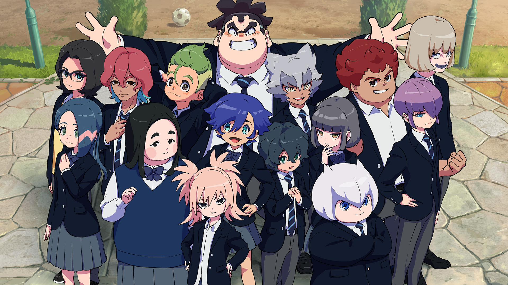

Nome e animação
O nome identifica o movimento e a animação mostra sua execução. A aparência é uma característica visual; ela não determina sozinha a potência ou a chance de vitória.

Guia completo de funcionamento, poder, elementos, categorias, aprendizado, aquisição e estratégia.
As técnicas especiais são movimentos únicos que transformam uma ação normal de futebol em uma jogada extraordinária. Elas podem aumentar a força de um chute, permitir que um jogador atravesse um marcador, interromper um drible, defender o gol ou unir dois ou mais jogadores em uma ação coordenada.
Uma técnica não deve ser analisada somente pela animação ou pelo número de potência. Cada movimento possui uma função, um elemento, um custo de TP, um tipo de usuário e condições de uso. A melhor escolha depende do duelo que está acontecendo, dos atributos do jogador, da técnica adversária e da quantidade de recursos que ainda resta na partida.
Os nomes dos medidores, os valores de potência, a ordem dos elementos e os métodos de aquisição podem mudar entre os jogos da franquia. Esta página reúne a mecânica geral que ajuda a entender as técnicas, sem misturar valores específicos de uma versão com outra.
Regra fundamental: uma técnica de potência alta não é automaticamente a melhor. Custo, vantagem elemental, posição, compatibilidade e momento do uso são tão importantes quanto a força exibida.
Ao consultar uma técnica, observe os campos abaixo. Eles permitem comparar movimentos diferentes e decidir quais devem ser usados ou equipados pelo jogador.
O nome identifica o movimento e a animação mostra sua execução. A aparência é uma característica visual; ela não determina sozinha a potência ou a chance de vitória.
Indica se o movimento é um chute, drible, bloqueio, defesa, técnica de goleiro ou técnica combinada. A categoria determina em quais situações ele pode ser ativado.
Mostra a afinidade elemental do movimento. A relação entre o elemento da técnica e o elemento da resposta adversária pode alterar o resultado do confronto.
É o valor de força do movimento antes de considerar atributos, nível, equipamentos, habilidades, posição e modificadores da partida.
Representa a quantidade de pontos de técnica consumidos ao ativar o movimento. Técnicas mais fortes geralmente custam mais, mas custo e potência não crescem sempre na mesma proporção.
Nem todos os jogadores podem aprender qualquer técnica. Posição, elemento, personagem, nível, sistema de evolução e regras do jogo podem limitar a compatibilidade.
As técnicas são usadas dentro de confrontos. O jogo identifica o tipo de jogada e compara a ação escolhida com a resposta do adversário. A sequência geral é a seguinte:
Isso significa que o jogador não deve gastar a técnica mais cara em qualquer situação. Uma técnica simples pode ser suficiente para superar um adversário fraco, enquanto o movimento mais poderoso deve ser guardado para o duelo que realmente decide a jogada.
A potência exibida na técnica é apenas o ponto de partida. O resultado final depende da interação entre o movimento e o personagem que o executa. Os principais fatores são:
Indica a força própria da técnica. Serve para comparar movimentos da mesma função, mas não garante vitória contra uma resposta de categoria diferente ou elementalmente favorável.
Chutes dependem do desempenho ofensivo; dribles valorizam a condução; bloqueios e defesas usam capacidades defensivas; goleiros possuem cálculos próprios em muitos títulos.
Um jogador abaixo do nível recomendado pode não aproveitar todo o potencial do movimento. A mesma técnica pode render resultados diferentes quando executada por personagens diferentes.
Compare o ganho de força com o custo. Uma técnica que custa o dobro não é necessariamente duas vezes melhor, principalmente em duelos comuns.
Chuteiras, luvas, acessórios e outros equipamentos podem alterar atributos, TP ou condições de uso, dependendo do jogo.
Formação, habilidades, química, efeitos temporários, posição do jogador e regras do modo de jogo podem influenciar a eficiência do movimento.
| Situação | O que avaliar | Erro frequente |
|---|---|---|
| Drible no meio-campo | Custo baixo, compatibilidade e chance de manter a posse. | Gastar a técnica mais cara contra um marcador que poderia ser vencido com uma opção comum. |
| Chute decisivo | Potência, elemento, distância, defesa adversária e TP do finalizador. | Escolher apenas pela animação sem observar a técnica de defesa do goleiro. |
| Defesa sob pressão | Categoria correta, elemento e risco de deixar o adversário finalizar. | Economizar TP e permitir que o adversário chegue a uma posição impossível de recuperar. |
| Técnica combinada | Participantes, posicionamento, custo total e vantagem sobre uma técnica individual. | Usar a combinação sem confirmar se todos os jogadores podem participar. |
O sistema elemental acrescenta uma camada estratégica aos duelos. A técnica possui uma afinidade, e essa afinidade pode ser favorável, desfavorável ou neutra contra a técnica adversária. A vantagem não substitui a potência: ela funciona como um modificador que pode decidir confrontos próximos.
A afinidade do personagem pode influenciar a execução. Por isso, observe tanto o elemento do usuário quanto o elemento exibido na técnica.
É o elemento que participa diretamente do duelo. Um jogador pode ter uma afinidade e utilizar um movimento de outra, conforme o sistema de aprendizado.
Uma relação favorável aumenta a eficiência da ação ou reduz a força relativa da resposta, conforme o jogo. Em confrontos equilibrados, essa diferença é decisiva.
Uma técnica muito potente pode perder para uma resposta menos potente se estiver em desvantagem elemental significativa.
Quando não existe uma relação favorável clara, o resultado depende principalmente de potência, atributos, nível, custo e qualidade da técnica adversária.
Use o elemento como critério de desempate. Se duas técnicas têm função e custo semelhantes, escolha a que enfrenta melhor a resposta esperada. Se a opção disponível estiver em desvantagem, considere uma técnica neutra, troque o usuário ou construa a jogada para outro jogador.
Variação entre jogos: os nomes dos elementos, a ordem do ciclo e os multiplicadores podem ser diferentes entre títulos. A regra segura é consultar o quadro elemental da versão antes de aplicar uma estratégia específica.
Usados quando o jogador tenta marcar. O chute pode precisar superar um bloqueio antes de enfrentar a defesa do goleiro. A distância, o elemento, a potência e o custo devem ser considerados.
Uso ideal: quando a jogada criou espaço suficiente e a finalização tem chance real de ameaçar o gol.
Permitem atravessar um marcador e continuar com a bola. Dribles de baixo custo são úteis para avançar, enquanto movimentos mais fortes devem ser reservados para marcadores importantes ou situações de pressão.
Uso ideal: contra o jogador que realmente impede o avanço, evitando desperdiçar TP em disputas simples.
Interrompem a progressão do adversário antes que ele consiga construir ou finalizar a jogada. Funcionam melhor quando o defensor está posicionado na rota do atacante.
Uso ideal: contra dribles fortes, ataques rápidos e combinações que precisam ser paradas imediatamente.
Respondem a ações ofensivas e reduzem ou anulam seu impacto. A defesa correta depende do tipo de ataque, da categoria da técnica e da relação elemental.
Uso ideal: quando a posse ou o gol estão sob ameaça e a resposta normal não é suficiente.
São movimentos específicos para defender o gol. Em muitos títulos possuem atributos, TP e regras próprias. O goleiro precisa manter recursos para mais de uma finalização.
Uso ideal: guardar a técnica mais forte para chutes que realmente superam a defesa comum.
Exigem dois ou mais jogadores e podem alcançar grande potência. Normalmente dependem de posição, participantes corretos, nível, proximidade ou uma condição especial.
Uso ideal: em uma jogada planejada ou em um confronto decisivo que justifique o custo elevado.
O aprendizado não termina no momento em que o movimento é desbloqueado. Dependendo do jogo, o jogador pode precisar evoluir, treinar, equipar a técnica em um espaço limitado ou aumentar seu domínio para obter melhor desempenho.
As formas exatas variam conforme o título, mas estes são os principais caminhos pelos quais uma equipe pode obter novos movimentos:
Partidas importantes, eventos, treinadores e cenas podem ensinar uma técnica, liberar um sistema de treino ou entregar um item de aprendizado.
Personagens podem ter uma sequência própria de técnicas. Consulte a progressão do jogador para saber em que nível cada movimento aparece.
Livros, manuais, pergaminhos e itens equivalentes ensinam movimentos a personagens compatíveis. Alguns são consumidos no processo.
Áreas de treinamento, pontos de habilidade, mestres e opções de evolução podem liberar ou melhorar técnicas, atributos e TP.
Jogadores recrutados podem chegar com movimentos que não estavam disponíveis no elenco inicial. A ficha completa deve ser analisada antes de substituí-los.
Torneios, missões, baús, rotas opcionais e vitórias específicas podem entregar manuais, itens ou jogadores com técnicas raras.
Exigem os participantes corretos e podem depender de posição, nível, relacionamento, formação ou progresso da história.
Modos pós-jogo, competições especiais, senhas, distribuição e outras atividades podem liberar técnicas ou personagens que não aparecem na campanha normal.
Como confirmar um requisito: consulte a lista de aprendizado do personagem, o menu de itens, a recompensa da atividade ou a condição indicada no jogo. Não assuma que uma técnica pode ser adquirida da mesma maneira em todas as versões.
Uma equipe equilibrada não precisa dar a todos os jogadores as técnicas de maior potência. O objetivo é cobrir as funções do campo e preservar recursos para os momentos decisivos.
Os jogadores têm TP suficiente para executar o plano sem ficar sem resposta?
O time possui drible, bloqueio, chute e defesa para lidar com as principais situações?
Existem opções favoráveis e neutras contra os elementos esperados?
As técnicas combinadas têm participantes e condições corretos?
Algum jogador aprendeu uma técnica nova, recebeu um item ou possui um espaço de equipamento vazio?
Há uma alternativa caso a primeira técnica seja anulada ou fique em desvantagem?
Para avançar: use um drible compatível e economize TP quando o marcador não for uma ameaça real.
Para interromper: use um bloqueio quando o adversário estiver prestes a criar uma jogada perigosa ou iniciar uma combinação.
Para finalizar: compare potência, elemento, distância e defesa do goleiro antes de escolher o chute.
Para defender: escolha uma defesa que corresponda ao ataque e preserve recursos para as próximas jogadas.
Para combinar: confirme participantes, posição, custo e importância do duelo antes de ativar uma técnica conjunta.
Essa leitura transforma as técnicas em ferramentas estratégicas: o jogador deixa de escolher apenas o movimento mais chamativo e passa a escolher a ação que melhor resolve o problema apresentado pela partida.